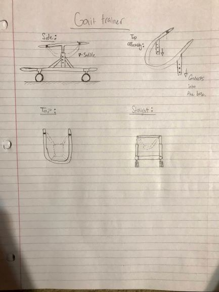

Gait Trainer
Abstract
Waylon is a one year old boy with spina bifida. Spina bifida is a birth defect that occurs when the spine and spinal cord don't form properly. Waylon seems to be capable of moving, but he needs some sort of device to support him while walking. We will be designing and building a gait trainer to assist him while he walks.
Team members
Houston Haynes
Bryson Austin
Michael Miner
Samuel Aranda
Problem Statement/overview of the need
Our client, Waylon, is a one year old with spina bifida. He is in need of a gait trainer because his family is wanting an adaptive mobility device for him to constantly use. He is able to support his own weight with his arms, and he also has the capability to use his les. The gait trainer will help him utilize his body in an effective way to walk. Currently, the family does not have their own adaptive equipment for Waylon. His therapist sees him regularly to work on his range of motion and strength. During some of Waylon's therapy sessions, Waylon has had the opportunity to use a gait trainer. The family really enjoyed seeing Waylon using the gait trainer and asked if we could design something similar to the one he uses in therapy. Our goal is to create a device that grows with Waylon as it helps him with his mobility.
Design Specifications
The parents have asked for the gait trainer to be height adjustable so it can grow with Waylon. They have also requested that we use a suspended saddle instead of a seat. The saddle allows Waylon to have better mobility and use of his body.
Background research
There are a variety of gait trainer option out on the market for people with disabilities. Gait trainers are usually used by people who are unable to walk independently. Depending on the functionality, materials, and accessories of the gait trainer, the cost usually runs from $600 to $6000. Gait trainers are built to be replaced when the child becomes to large for the equipment, this is impractical and expensive for the families needing adaptive equipment. A few pros for people using gait trainers are that it promotes joint and bone development, improves lung function, better bowel and bladder function, better circulation, improved cognition growth with environmental exploration, and promotes a more active lifestyle. Some alternatives to gait trainers are wheelchairs, walkers, and canes. Taking all of this into consideration, we would like to build a device that will be used for a few years and that will be cost effective.
Conceptual Design
Design Concept 1
The idea for this design is to have adjustability in the height and width of the gait trainer frame. This adjustability allows the equipment to adjust to Waylon's growth. The upper part of the frame also accommodates for the saddle to be attached. We also have an alternative seat that can be mounted to the frame. The height of seat mount can still be adjusted, and the seat will still give mobility for the user.
Design Concept 2
This design also allows the equipment to adjust to Waylon growth spurts. The two curved tubes allow for more support leading up to the top assembly. This is a very simple design that meets all the request that we were given.
Design Concept 3

Our third version uses a single vertical tube with some supports coming from the bottom base. This is another simple design that allows for only a vertical height adjustment, the width of the frame will stay the same. A saddle attachment will be used on the upper assembly, and this attachment will allow for the saddle to be removeable.
Evaluate concepts/select candidate
We will be selecting our first design concept for our project. We like the double vertical bar frame that will help us with weight bearing and stability. We also believe that the design for the adjustability of the frame will also help us best with adjusting to Waylon's growth.
Detailed Design
This section will describe a detailed design process
Description of selected design
This design is similar to other commercial gait trainers, however we added height adjustment and other customization. The design had a large emphasis on stability and safety. The design is very smooth with no sharp points to protect the rider and those around them. Alongside the gait trainer itself, the saddle will also provide small height adjustments if necessary. The wheels will be bought and installed on the gait trainer. We will be adding color to the gait trainer and the wheels to make it appealing to the family.
Detailed description of selected design
Analysis
We will do a few analysis that will calculate the tipping point of the gait trainer, the applied forces on the trainer, and the shear forces on the clevis pins.
Engineering analysis 1
This analysis will calculate the required force that will tip the gait trainer while on an incline.
= Engineering analysis 2
This analysis is for calculating the forces on the tower support. We designed a top frame for our gait trainer and we wanted to calculate the forces.
= Engineering analysis 3
CAD Drawings
{kind=link}
Bill of Materials
qty, item, description, source, part number, price
Assembly Instructions
Fabrication Process
Insert pictures of fabrication process
Testing and implementation
Describe testing, delivery, how used/received by the family
Photos of Completed design
Insert pictures of the final product
Instructions for safe use
Provide a clear summary of safe use for the family. Do not use the device unless supervised by an adult that has been fully understood the safe use of this product.